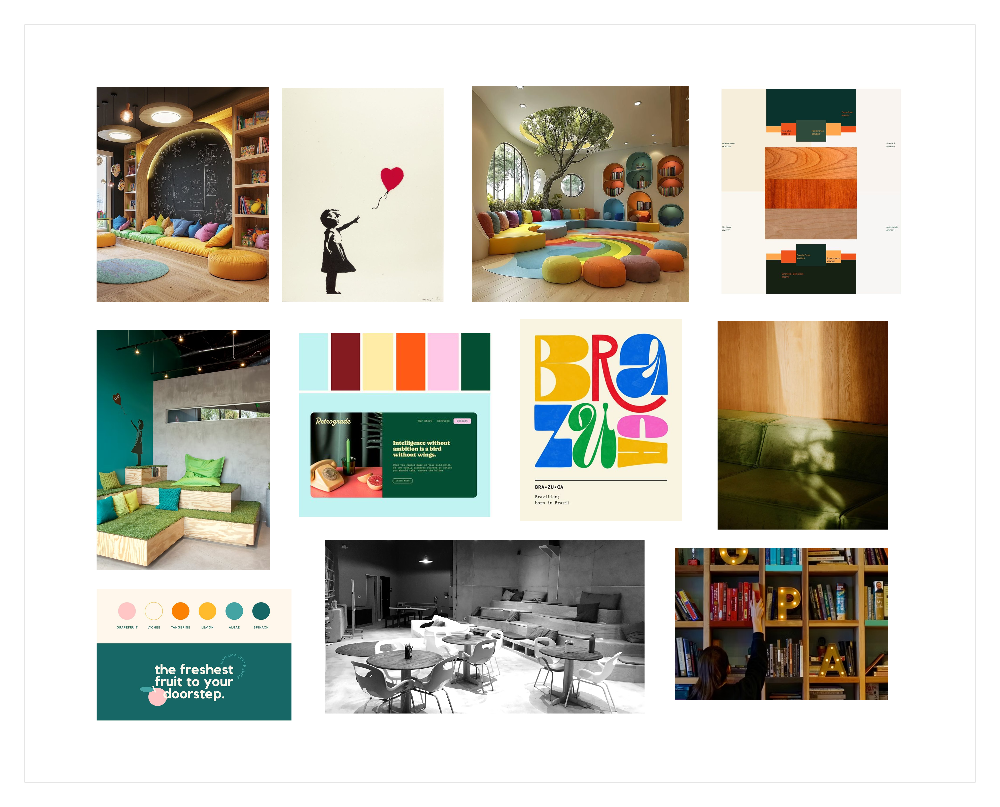

Prakses
I designed a website for an educational organization, prakses. Prakses is a college preparation makerspace intended to help high school students discover their academic pathway and navigate a rapidly changing world and workforce.
UX Researcher
UX Designer
Just me!
Figma
3 months
Overview
For prakses, I conducted a competitive analysis of existing businesses, defined user personas representing high school students and parents, and developed a brand identity that feels approachable and youthful for a teenage audience. I then delivered a new website, component library, and an Instagram campaign to help prakses expand its reach.
Without a strong website, prakses is limiting its potential reach, making it more difficult to connect with the students who would benefit most from its programs.
Currently, the business has a site; however, it is outdated and is not complete yet. One of the main sections on the site has been empty for years, and it would be quite helpful for students to have. This matters because having a well-designed, completed website will not only help the organization but also provide important resources for the students. Ultimately, a website would allow for prakses to have an organized, digital space for communicating their mission, improving resource accessibility, and strengthening trust between both students and parents.
User Analysis
Target audience
High school students (~14-17 years old), typically from public high schools. They may have certain passions or career paths they are considering after high school, or need help with finding them. Another target audience would be the parents of these students, who are interested in providing college-prep support for their child.
USER PERSONAS
Understanding our users
To get a better sense of the different kinds of people who would interact with the prakses site, I created 3 user personas (2 high school students & 1 parent). This helped me think about the different kinds of students who go there, such as students who already know major they want to pursue vs those who aren't sure and need time to explore. I identified the various goals, needs, and current behaviors to make sure the website accounts for the wide ranges of experiences students have when navigating the college application process. I also accounted for parents' perspectives by thinking about their unique position in wanting to provide external support for their children. Ultimately, creating the personas helped me get a better sense of the audience prakses reaches to.

Competitive Analysis
The competitors
To better understand prakses' unique edge in the educational space, I conducted competitive analyses to explore the business's competitors and identify the competitor's strengths and weaknesses. I also explored the current prakses website to identify its pros and cons and compare them to its competitors. I coducted 2 kinds of competitive analyses; one focused on businesses' brand tone and voice and another on the visual branding of each competitor's site.


Branding
Moodboard
One of the first things I did when working on developing a new brand identity for prakses was create a moodboard. I incorporated some pictures from the actual makerspace and continued my exploration from there. This was to keep the brand identity grounded in reality and explore potential creative directions that match the existing space. I wanted to go for a bold, playful vibe in order to cater to the youthful high school students audience.

REBRAND
Brand Identity
After creating the moodboard, I focused on putting together a logo, color palette, and typography. I chose bright colors, round typefaces, and a playful logo to make prakses feel like a welcoming environment where high schoolers feel free to express themselves, personally grow, and discover passions. These visual elements highlight the space's value for creativity and community rather than solely focusing on college applications.

Low-Fidelity Wireframes
WIREFRAMES
Low-Fidelity Designs
Below are the initial wireframes I created to establish the foundational structure and layout of the website. I focused on the functionality and structure of the site, rather than the colors, fonts, or images. This helped me put together a blueprint of the site early in the design process before I went on to create higher fidelity designs.

High-Fidelity Wireframes
WIREFRAMES
High-Fidelity Designs
Below are the final designs for the website. I incorporated the logo, typefaces, and color palette from the new branding to create a cohesive visual identity across all pages. At this stage, I focused on visual storytelling while improving the visual hierarchy, spacing, and consistency to make sure the interface felt easy to use.

Prototype Walk-Through
Component Library

Social Media Campaign

Process Book

I created a process book in order to document the entire design process that went into redesigning prakses. The book walks through the journey from defining the problem and initial research to the final deliverables. Feel free to check it out!
Takeaways
Final Thoughts
Through this project, I learned how to establish my own timeline and stay accountable to it. Working solo pushed me to balance multiple roles, from research, branding, and web design, which helped me learn how interconnected all these stages truly are. I also became more intentional about designing for both students and parents, given that their needs and expectations are different in subtle, but important ways. If I had more time to work on this project, I would want to get feedback from real users and make improvements to the designs based on their feedback. Overall, this project gave me the opportunity to design for a real business and learn how to design with both purpose and practicality.
wanna see my other projects? explore all projects →